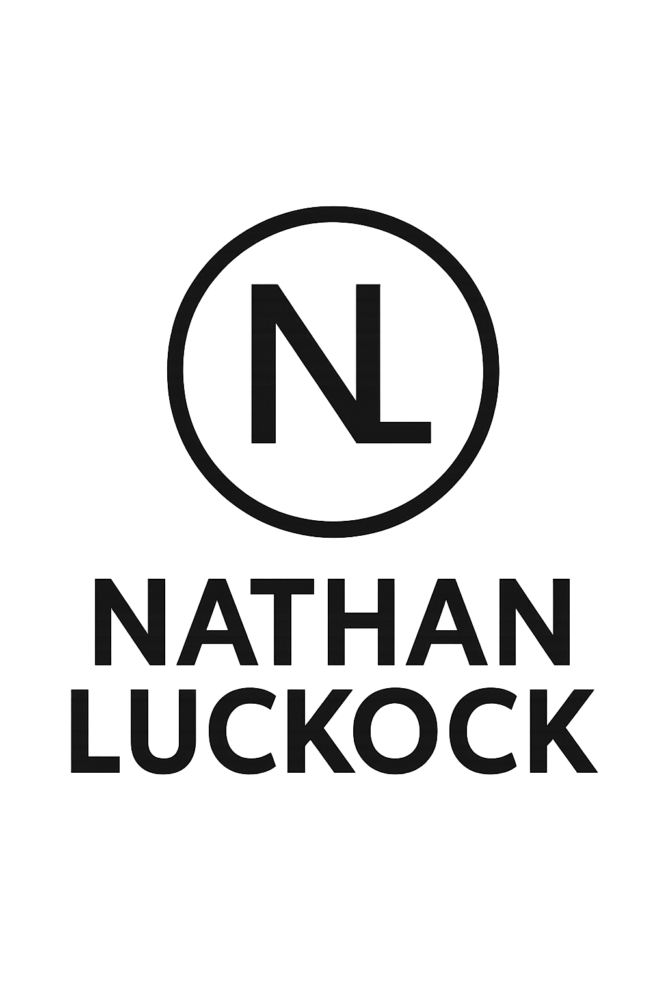

Overview
Purpose
Welcome to my personal portfolio website! The purpose of this site is to showcase my journey in web development, highlighting my skills, projects, and professional growth. This platform will serve as a central hub for potential employers and collaborators to explore my work and understand my capabilities in creating modern, responsive web applications.
Audience
This website is designed for tech companies and potential employers looking for web development talent, fellow developers interested in collaboration opportunities, clients seeking web development services, and anyone interested in modern web development practices and projects.
Dynamic Elements
The website will incorporate the following JavaScript features to enhance user experience:
1. Interactive Project Gallery: Using DOM manipulation and event listeners to create a filterable project showcase. Users can filter projects by technology or type, with smooth transitions and dynamic content loading.
2. Form Validation and Submission: The contact form will use JavaScript for real-time validation, providing immediate feedback to users. This demonstrates conditional branching and DOM interaction.
3. Dynamic Theme Switcher: Implementation of a dark/light theme toggle using JavaScript objects to store theme preferences in local storage, showing object usage and DOM modification.
4. Skill Progress Visualization: Using JavaScript arrays and array methods (map, forEach) to create animated skill progress bars and dynamic content updates.
5. ES Modules: The JavaScript code will be organized into modules for better maintainability, with separate files for utilities, components, and main functionality.
Branding
Website Logo
The logo represents professionalism and technical expertise while maintaining a modern, minimalist design aesthetic. The color scheme matches our site's palette.
Style Guide
Color Palette
Palette URL: https://coolors.co/396e94-e7c24f-a42212-ffffff
| Primary | Secondary | Accent 1 | Accent 2 |
|---|---|---|---|
| #396E94 | #E7C24F | #A42212 | #FFFFFF |
Typography
Heading Font: IM Fell French Canon SC
This elegant serif font adds a touch of sophistication and professionalism to the headings, making them stand out while maintaining readability.
Paragraph Font: Lato
A clean, modern sans-serif font that ensures excellent readability for body text while complementing the heading font perfectly.
Normal paragraph example
As a web developer, I focus on creating responsive, user-friendly websites that not only look great but also provide an excellent user experience. My approach combines modern design principles with efficient, clean code to deliver high-quality web solutions.
Colored paragraph example
My portfolio showcases various projects that demonstrate my skills in front-end and back-end development, including responsive design, interactive user interfaces, and database integration.
Navigation
Site Map
Content
Home page
The home page will welcome visitors with a professional introduction and overview of my skills. It will feature a clean, modern design with sections for professional introduction, key skills and technologies, featured projects preview, and quick contact information.
Portfolio
The portfolio section will showcase my best work with detailed project descriptions, technologies used, live demo links, project challenges and solutions, and visual previews of completed work.